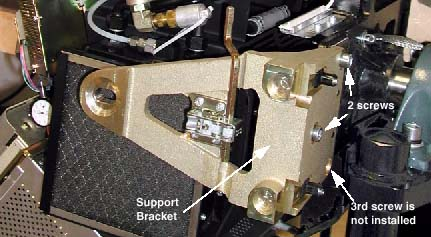

Operating Documentation
Direction 5114043-800, Rev# 9
LightSpeed 3.X Service Methods (Advanced)
Operating Documentation |
| Required Persons | Preliminary Reqs | Procedure | Finalization |
|---|---|---|---|
| 1 |
| Last Revised: | October 12, 2007 |
| Item | Qty | Effectivity | Part# | Manufacturer | |
|---|---|---|---|---|---|
| Hoist | 1 | - | - | - | |
| 10 mm Ball Hex key to 3/8” drive sockets | 1 | - | - | - | |
| 19 mm socket or box wrench | 1 | - | - | - | |
| 5/16, 1/2, 9/16 inch sockets or box wrenches | 1 | - | - | - | |
| Item | Qty | Effectivity | Part# | Manufacturer |
|---|---|---|---|---|
| Paper Towels | - | - | - |
| Item | Qty | Effectivity | Part# | Manufacturer | |
|---|---|---|---|---|---|
| High Voltage Tank (Anode) | 1 | - | - | - | |
| NOTE: | Before beginning this procedure, please read the safety information in Equipment Service - Gantry |
Move table to its lowest elevation.
Remove the following gantry covers:
Side covers.
Top covers.
Front cover.
Turn OFF all 3 switches (Axial Drive, HVDC, 120 VAC) on the STC backplane.
| ELECTROCUTION HAZARD | |
| HIGH VOLTAGE PRESENT. | |
| Use proper lockout/tagout procedures before replacing components. |
Remove power at main disconnect (A1) panel. Use proper Lockout/Tagout procedures.
Remove the 3 M12 cap screws that will release the support bracket near the STC assembly (see Illustration 1) .
| NOTE: | Lower rear “3rd” M12 screw may not be installed. This is normal. |
Illustration 1: Gantry Cover Support Bracket and Screws

Rotate gantry to locate the high voltage tank about 9 o’clock.
Engage gantry rotational lock.
| CRUSH HAZARD. | |
| UNEXPECTED GANTRY ROTATION CAN CAUSE SERIOUS INJURY. | |
| Ensure gantry rotational lock is fully engaged to prevent unexpected gantry motion. |
Use the spanner wrench to remove the high voltage cable connector from the high voltage transformer tank.
Ground the ends of the H.V. cable to the Gantry frame, to ensure no voltage exists at the end of the cable.
Use rags or paper towels to wipe excess oil from the High Voltage Cable Connector and tank well.
Stuff the tank wells with paper towels to absorb any oil.
Remove cables J1, J2 and J6 from the measurement PWB.
| Observe the position of the cables and ty-raps for later installation. It is critical to prevent damage to the system during normal gantry rotation (14 G's of force are felt at 0.5 second rotational speed). | |
Remove four screws fastening the cover to the inverter assembly and remove cover.
Measure voltage on the two large capacitors to verify 0 volts.
Disconnect J1 connector from the bottom of the inverter assembly.
Disconnect J6 connector from gate driver PWB.
Carefully disconnect four fiber optic cables from gate driver board, making note of where the Ty-rap is for routing the cable back in its original position.
| NOTE: | Optic cables must not come in contact with Green Resistors on the Inverter; contact with the resistors can result in a melting of the optic cables. |
Verify HVDC rail or 120 VAC is not present.
Disconnect HVDC cable from capacitor PWB.
Cut Ty-raps from side plate of inverter.
Remove all cables from the Inverter by removing cable restraint at the top of the inverter.
Remove two (2) inverter output leads from H.V. Transformer Tank locations P1 and P2.
Disengage gantry rotational lock.
| Be careful not to damage any of the loose cables while you rotate the gantry to position the tank for removal. | |
Carefully rotate the gantry clockwise to the 2 o’clock position.
Engage gantry rotational lock.
| CRUSH HAZARD. | |
| UNEXPECTED GANTRY ROTATION CAN CAUSE SERIOUS INJURY. | |
| Ensure gantry rotational lock is fully engaged to prevent unexpected gantry motion. |
Remove the four (4) 3/8 bolts from the inverter baseplate, that fasten the inverter assembly to the H.V. Transformer Tank.
Remove the inverter assembly from the gantry:
Attach the hoist to the boom arm in the gantry.
Attach the hoist lifting chain to the lifting bracket on the transformer tank bottom.
Remove slack from the hoist chain.
Remove the four (4) M12 screws that fasten transformer tank to the rotating base.
Use the hoist to lower the transformer tank to the floor.
| NOTE: | Some replacement tanks may come with four (4) adapter
bushings to ensure FRU compatibility to older gantry models that use
smaller diameter mounting bolts. If the diameter of the existing mounting
bolts on the system do not require the use of these adapters, discard
them (see
Illustration 2). Apply the torque tool to the nut if a bolt is secured by a nut. Illustration 2: Adapter Bushings
|
Install the new transformer tank.
Torque the four (4) mounting bolts in place (see Table 1). (Round up to the nearest setting on the tool.)
Table 1: Torque Values
| 49.0 ft-lbs | 66.4 N-m | 587.7 Lbs-in | 676.9 Kg-cm |
Mount the inverter to the HV tank. Torque the four (4) 3/8 inch bolts (see Table 2). (Round up to the nearest setting on the tool.)
Table 2: Torque Values
| 20.0 ft-lbs | 27.1 N-m | 240.0 Lbs-in | 276.6 Kg-cm |
Remove the host and boom.
Disengage gantry rotational lock.
Rotate the gantry counterclockwise to the 9 o’clock position.
Engage gantry rotational lock.
| Ensure cables are properly secured. It is critical to prevent damage to the system during normal gantry rotation (14 G's of force are felt at 0.5 second rotational speed). | |
Before you install the HV Cable Connector, add 20 cc of dielectric oil to the HV Connector well in the HV Transformer Tank.
Align the cable terminal orienting key with the notch in the receptacle.
| Do not over tighten the locking ring. Over tightening can deform the cable plug sealing surfaces, break the oil seal between receptacle and housing, twist the receptacle, and disrupt internal wiring. | |
Slowly insert the cable to engage the connector pins, and seat the cable in the well.
Tighten the cable locking ring.
Rotate the cable strain relief for a clean cable dress.
Use the spanner wrench to tighten the locking ring.
Use a torque wrench to tighten the locking ring (see Table 3). (Round up to the nearest setting on the tool.)
Back off on the cable locking ring without disturbing the cable plug.
Re-tighten the locking ring (see Table 4). (Round up to the nearest setting on the tool.)
Table 3: Torque Values
| 11.1 ft-lbs | 15.0 N-m | 132.2 Lbs-in | 153.5 Kg-cm |
Table 4: Torque Values
| 7.1 ft-lbs | 9.6 N-m | 85.2 Lbs-in | 98.2 Kg-cm |
| NOTE: | Use the spanner wrench with a torque wrench when you tighten
the high-voltage cables on the tube unit. IF YOU GET OIL ON YOUR HANDS, WASH THEM NOW. |
Carefully wipe up all excess oil.
Secure HV Cables using large cable ties as shown in Illustration 1.
Reassemble Gantry.
Perform KV Gain Pots Adjustment.
Perform kV Meter Check.
Perform mA Meter Check.
Perform System Scanning Test.